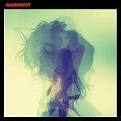
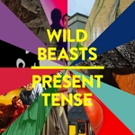
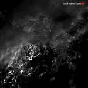

Top Albums of 2014: Part One
It is by a strange coincidence rather than an uncharacteristic example of consistency that part one of our Top Fifty Albums of 2014 list should be published on exactly the same day as last year’s effort. I guess this is the latest we can reasonably delay it for. Sadly, it still wasn’t late enough to include D’Angelo’s last gasp effort. Still, despite my persistent and admittedly tiresome protestations that 2014 wasn’t a great year for music, our final fifty picks stands up pretty well to predecessors from years gone by. Dive in and let us know what you think in the space below. David Coleman, Editor-in-Chief)
Part Two, the top 25, is now available here
. . .
 50. Ariel Pink
50. Ariel Pink
pom pom
(4AD)
Ariel Pink’s music brings to mind the style parodies of The Mothers Of Invention. This time out, however, Pink veers closer to the mainstream with the breezy pop of Put Your Number In My Phone and the dance rhythms of Black Ballerina. His yen for sound collages is still found on songs like Dinosaur Carebears and Sexual Athletics, which pull to the max the levers of whimsy and carnality. He can also recreate any sound at the drop of a hat: B-movie concupiscence (Nude Beach A Go-Go), Jane Fonda workout synth-pop (Lipstick), Depeche Mode decadence (Not Enough Violence). Foxygen vied this year for the Rundgren crown, but Ariel Pink is the true star. (Angel Aguilar)
49. Warpaint
Warpaint
(Rough Trade)
By the time Warpaint dropped this record in January this year, almost four years had passed since the release of their excellent debut LP, The Fool. In that time, the band’s sound has become notably more assured. Guitars are even more intricate than those found on their debut, weaving and swaying in and out of focus and tangling themselves up in their own meanders. There’s a recurring motif throughout that is as sultry as it is ominous, with eerie, macabre howls vying with seductive grooves making for a racy, ghostly effect. This is a long-awaited follow-up that mesmerises and tantalises, with an arresting sense of foreboding.(Carl Purvis)
48. Wild Beasts
Present Tense
(Domino)
Wild Beasts earned a short career break following their astonishing run of three albums in as many years, each one an incremental improvement upon the last. Following nearly three years on from 2011’s Smother, Present Tense was always going to be a different beast, Wild Beasts hardly being a band to tread water. A definite step forward in sonic terms, Present Tense sounded very much like a studio creation, carefully pieced together but never overdone. A more cohesive work than the band’s first two records, for sure, but perhaps a shade inferior to Smother due to its relative lack of hooks. For all their eccentricity, Wild Beasts have always served up memorable singles; Wanderlust aside, Present Tense lacked a true standout. At the upper echelon of popular music, however, this really seems like a minor quibble. (David Coleman)
 47. Ty Segall
47. Ty Segall
Manipulator
(Drag City)
It’s not unusual for Ty Segall to grace us with at least one release every year in whichever form or group he decides to. For 2014, though, he released what is his most refined solo effort, Manipulator. Being 17 tracks and almost an hour long, Manipulator stands as Segall’s most ambitious and cohesive work, pop and psych inspired rock music exhibiting as much polish as appeal while staying true to what makes the garage special. While tracks like Manipulator, It’s Over and The Connection Man exude psych rock’s off-kilter zip, The Singer, Feel and The Clock boast clear note progressions and thoughtful arrangements, sophistication applied. He still delivers on fuzz, Feel and The Crawler appeasing any want for volume. (Sean Caldwell)
 46. Scott Walker + Sunn O)))
Soused
(4AD)
“Why don’t minstrels go from house to house / Howling songs the way they used to?” croons Scott Walker at one point on this record - Soused’s extreme abstract bleakness is another way of posing the same bizarre question. Most songwriters tend to slip into irrelevance by Scott’s age, but he’s gone the other way, once a 60s chart-topping sex-symbol with a schmaltzy BBC show, quickly succumbing to MOR balladeering, somehow he emerged one of the only true bastions of the avant-garde song form, pushing the boundaries away in his quest to depict the authenticity of human experience at its most fraught. Who better than Sunn O))) and their more-than-a-studioful of amplification to help him plumb such depths? (Stephen Wragg)
 45. Blank Realm
45. Blank Realm
Grassed Inn
(Fire)
Aussie act Blank Realm just couldn’t write a damn proper four minute tune if their life depended on it, but does it matter when their latest, Grassed Inn, comes close to perfectly bridging that gap between scattershot noise and droning melodicism? Which is to say that they’ve progressively cleaned up their act, though repeated listens reveal a wholly hypnotic sonic experience that actually captures a relatively structured, complex beauty. If you can stomach the nasal, shrill tone of siblings Daniel and Sarah Spencer, a charm in it of itself, you’ll be rewarded with a frenzied, vertiginous aura of freewheeling tracks that are addictive in their uncontrollable allure. They’ve improved their songwriting skills immeasurably, controlling those dizzying detours to deliver a trance-inducing miasma of guitar-based noise pop at its most gloriously fractured. (Juan Edgardo Rodriguez)
 44. Slow Club
44. Slow Club
Complete Surrender
(Caroline International)
Sheffield duo Charles Watson and Rebecca Taylor seem determined to break away from the accusations of being twee that have dogged them their whole career. On their third record, they trade in barely-there torch songs, unabashed pop and even a bit of Northern Soul. They’ve been growing up on the job, but rarely has a band shown such progression in this short a length of time. Plus Complete Surrender features Not Mine To Love, a beautifully observed ballad of yearning and intensity that surely confirms Taylor’s status as one of the most skilled vocalists working in music today. Who knows how far Slow Club are capable of going? (Joe Rivers)
43. Iceage
Plowing Into the Field of Love
(Matador)
Few records still manage to capture the spontaneous exhilaration of New Brigade, a near perfect twenty five minutes of snotty, textured noise that reinvented the post-punk template. Abstruse Danish act Iceage had to eventually grow up, though, and Plowing Into The Field Of Love finds them extending their dark, literary compositions with an enthralling theatrical exhibitionism. It also brought to the fore the commanding presence of 22 year old vocalist Elias Bender Ronnenfelt, a gauche male with an Adonis-esque complexion who now makes the effort to enunciate his tenebrous poetry as opposed to warbling his words. There’s a beauty in Plowing that’s not immediately apparent: one can easily lost amidst its stark, chaotic and almost inhospitable air, but a closer listen reveals a quartet whose fully in control of their grim impulses. (Juan Edgardo Rodriguez)
42. Perfect Pussy
Say Yes to Love
(Matador)
Noise Pop bands have always been a dime-a-dozen, but rarely do you see a band so defiantly emphasise the former adjective while never losing site of the latter the way Perfect Pussy does. Say Yes to Love, despite its optimistic name and brief run time, is an endurance test - a gauntlet of breakneck speed, emotionally draining lyrics, and blizzards of howling feedback which the band members have subjected themselves to for art’s sake. By the end, one track even requires four minutes of eerie silence just to balance out the one minute of unabashed fury that precedes it. It all sounds draining, but what Say Yes to Love proves is that when you completely drain yourself both physically and emotionally for the sake of punk rock, the results are nothing short of revelatory. (Peter Quinton)
41. Azealia Banks
Broke with Expensive Taste
(Azealia Banks / Prospect Park)
The story of Azealia Banks' debut album, Broke with Expensive Taste, is an exhausting one. Countless delays to its release, coupled with frequent public spats between Banks and her record label made it seem at one stage unlikely that the record would ever even surface. Eventually, however, in 2014, several months after Banks' parting with Polydor/Interscope, it finally saw the light of day. And, despite the mounting pressure from three years of build up to its release, it delivered, thanks to Banks' sharp tongue and unique, addictive flow. Whilst no track on the album betters the standard set by breakthrough track 212 (could it ever?), there's more than enough to take away from this surprisingly accomplished and enjoyable debut. (Craig Stevens)
40. Freddie Gibbs and Madlib
Piñata
(Madlib Invazion)
One of the more interesting collaborations of the year, the gruff Freddie Gibbs and artful hip hop maestro Madlib delivered on the promises made from a few EPs and put out their full-length effort, Pinata. Three years in the making, Gibbs’ vulgarity-laden mea culpa is treated with Madlib’s soul-attentive stylistic collages, a humanizing touch that grants Pinata the benefit of being more than a mere crime saga. Though flush with guest features (Raekwon, Danny Brown, Earl Sweatshirt…etc.), Gibbs manages to keep the spotlight, detailing heartache (Deeper), drug use (Higher) and indigence (Shitsville) with an honesty that’s both difficult to take and impossible to ignore. The standout Thuggin’ may easily have come across cliché were it not for Madlib’s ornate treatment. (Sean Caldwell)
39. The Horrors
Luminous
(XL)
With each album release, Southend’s The Horrors seem to get better and better. Luminous, their fourth studio effort, saw them continue their career crescendo with more synthesised slabs of lushly textured dream pop. Lengthy opener Chasing Shadows is an outstanding, sprawling epic, a mesmerising, weaving journey through spacey swirls whilst the 80’s influence is strong elsewhere. Cocteau Twins, OMD and Visage are all recalled at various points throughout an engaging album where they manage to master their sound and style masterfully. With songwriting skills now being finely honed it is surely only a matter of time before this impressive quintet deliver an album to rival all-time classics. (Graeme Marsh)
38. Elbow
The Take Off and Landing of Everything
(Fiction)
After the arena-ready anthems of Elbow's last three albums, the five-piece goes intimate on The Take Off and Landing of Everything. Well, as intimate as such a worldly, ambitious band can go. While the title track is a seven-minute blast of ecstatic energy and celebration, Fly Boy Blue / Lunette is a drunken swagger jam, Charge simmers rather than boils, My Sad Captains is anchored by majestic horns and New York Morning finds the gentle moments in the bustling city. Elbow has enough chest-beating, boisterous epics. This year, the band moved forward and found new colours and vibes to explore. They are better off for it. (Joe Marvilli)
37. Flying Lotus
You’re Dead!
(Warp)
It was perhaps inevitable that this, FlyLo’s fourth album, would be the future jazz opus that he always wanted to make. And while he has no doubt confused a few fans in the process, you can’t fault him for trying to further his sound. The brain-melting bass riffs that open the album demonstrate Steven Ellison’s abilities as a composer rather than just a master re-sampler. Still, the best parts here come when he busts out the synths and samples: the Kendrick Lamar collab Never Catch Me and the minimalist Ready Err Not stand out as particular highlights. (Joel Stanier)
 36. Mac DeMarco
36. Mac DeMarco
Salad Days
(Captured Tracks)
To form a portrait of Mac DeMarco, one must leave aside the term “slacker rock”. DeMarco works hard at sounding carefree, but there are complex components at work here: meticulous songwriting, crafty guitar work, and a pliable voice that can shift effortlessly from hope to ironic distance. The title song has the playful lilt of Bolan circa The Slider, and there’s glam-rock drums on Chamber Of Reflection, but elsewhere the guitar work recalls Crazy Horse, with a smouldering interplay of jagged and fluid lines. Case is point is Jonny’s Odyssey, an instrumental that lodges in your mind. DeMarco also delivers in an intimate setting — at his shining best on the acoustic Let My Baby Stay. (Angel Aguilar)
 35. Lana Del Rey
35. Lana Del Rey
Ultraviolence
(Polydor)
Impulsive, brooding, and glamorously masochistic, Lana Del Rey is becoming pop music’s anti-queen, the alternative to Beyoncé’s glittering leotards and Taylor Swift’s platinum-slick confections. “Put my little red party dress on, everybody knows that I’m a mess’’, Lana slurs on the opening track Cruel World. Together with The Black Keys’ Dan Auerbach, Lana amps up the fuzzy guitars, reverbed vocals, and cool-as-a-beach surf rock choruses, making sure to stamp her 1950s-noir pout all over the artwork. She takes her Americana obsession, filters it through breathy verses of sadness and lust, and paints a glorious picture of distraught sweethearts looking for love and money. Who cares if Del Rey’s persona isn’t authentic? With an album this good, it doesn’t need to be. (Luiza Lodder)
 34. La Roux
34. La Roux
Trouble in Paradise
(Polydor)
The distinctive vocals of Elly Jackson aside, there's little evidence that Trouble in Paradise is by the same artist that brought us La Roux's 2009 self-titled debut album. The urgent, borderline-aggressive sound found on previous releases such as In For The Kill and Tigerlily has been noticeably restrained, allowing for the consistently brilliant songs, altogether warmer and more emotive than those on the previous album, to shine. Trouble in Paradise may not have the gleaming pop sparkle and immediacy of its predecessor, but it's a more enjoyable and enduring album for it. (Craig Stephens)
33. Real Estate
Atlas
(Domino)
Underneath this canopy / All light up above us / Oh but I can see the sky / Is not the only thing that changes rapidly. Sure, the old Real Estate would probably do little more than sip a Budweiser or Sprite under that canopy, but the grown-up Real Estate of Atlas, in contrast, has way too much on its mind to just sit there comfortably. The music itself might fool you, as the band’s laid-back sound is more elegant and atmospheric than ever, but Atlas is nevertheless packed with ruminations on anxiety, the passage of time, and shifting priorities – the kind of things that get hard to avoid when you have to become a real adult. It may not be enough to sway naysayers who don’t identify with the group’s “simple” approach, but the more personal approach Atlas brings forth abolishes any argument that their music overall has no meaning. (Peter Quinton)
32. Future Islands
Singles
(4AD)
Did an appearance on Late Night with David Letterman turn Future Islands into a household name, or propel Seasons (Waiting on You) to the top of numerous year-end lists? Probably not. For one, “household name” might be generous, and for another, that song is memorable enough to speak for itself. Seasons is an ample name for that song’s intense, sun-draped feeling, but titles like Doves, Back in the Tall Grass, and Light House convey the same feeling of long days at the beach and warm nights. And that’s just what Future Islands have made with Singles, an album that takes Future Islands’ songwriting up a notch and, courtesy Chris Coady, who has always made the best of what are at heart standard pop songs, makes them sound better than ever. (Forrest Cardamenis)
 31. Spoon
31. Spoon
They Want My Soul
(Loma Vista)
Following a lengthy run, Spoon kept quiet for the past four years before coming back in 2014 like dinosaur relics in the modern era. It seemed like the first time in which the stakes were raised for the Austin veterans, having been put in the position to prove themselves when the risk was always minimal. Having to retain that level of consistency can make anyone with a winning streak weak at the knees, and yet they managed to find a way past the crowd by writing a straight-ahead rock record that zips by so fluidly that one can almost take it for granted. Which is nothing new for Spoon: They Want My Soul sounds so effortless that it has an almost casual air, pleasing on its own terms and not conforming to an idea of how or what indie rock should sound like nowadays. But it doesn’t stick to an old definition of how Spoon used to sound, either, moving forward without forgetting how they earned their stripes in the first place. (Juan Edgardo Rodriguez)
 30. Cloud Nothings
30. Cloud Nothings
Here and Nowhere Else
(Carpark)
Cloud Nothings aren’t doing anything new on Here and Nowhere Else, as the countless comparisons to Japandroids and Titus Andronicus will prove, but it is a hand over fist improvement on Attack on Memory. Stay Useless seemed like the odd song out on that album, a tight, emo/pop-punk anthem with a strong guitar part, but what was once a stand-out is now the norm. Psychic Trauma takes that template and deploys it to success once again, while Pattern Walks spurs across loud, angry movements for nearly seven-and-a-half minutes. The other songs are well-executed punk tracks, but Pattern Walks suggests that Cloud Nothings is for real, a band that will continue to challenge itself and play with form without sacrificing hooks and fury. (Forrest Cardamenis)
 29. Todd Terje
29. Todd Terje
It’s Album Time
(Olsen Records)
After years of releasing singles, the Norwegian producer finally got round to releasing his debut LP, the appropriately-titled It’s Album Time. And it was well worth the wait. Terje pays no heed to notions of taste or trend, as there are hints of schlager and Europop in these dozen tracks. From the impossible bouncy Svensk Sås to the intoxicating motorik of Delorean Dynamite to the icy, classy balladry of Johnny And Mary (featuring Bryan Ferry, no less), Terje is never less than compelling. Dance albums aren’t supposed to be this cohesive, interesting and full of ideas, but Todd Terje is clearly not your average DJ. (Joe Rivers)
28. Banks
Goddess
(Harvest)
California's Banks caught the attention of many this year, thanks to the moody confessionals of her début album, Goddess. Its lush, downcast textures place her as one of a long line of digital-era divas who've successfully channeled the bruised sound of trip-hop into modern day R&B. Production comes courtesy of many, including Jamie Woon and Totally Enormous Extinct Dinosaurs, but it's testament to Banks' vision that this record still feels completely her own. Her non-showy vocals, electronic loops and slo-mo beats have made her one to watch in 2014 and beyond. (Gary McGinley)
27. Mogwai
Rave Tapes
(Rock Action)
From the opening chimes and the gorgeous bass guitar tones that kick off Heard About You Last Night, Rave Tapes is a statement of intent for Mogwai, who by many people’s standards had lost their way in recent years. Following on from their soundtrack album for TV series Les Revenants, this album blends electronic elements with ‘real’ instruments to excellent effect. Remurdered is the best example, its mysterious synth arpeggio building slowly towards a soaring crash-cymbal crescendo. And The Lord Is Out Of Control closes the album brilliantly with its piercing vocoder harmony. (Joel Stanier)
26. Sleaford Mods
Divide and Exit
(Harbinger Sound)
So it’s these two blokes, one of them plays bass guitar riffs with as few notes as he can manage over these really simple drum machine loops, the other one basically yells about how much he hates you or someone you know. It’s about run-down cities and being forced to hold down shit jobs, the social injustices perpetuated by the rich, about people who think they’re better than the rest. It is, unmistakably, music for the working class – specifically the British, male working class, stringing along references to bad British TV nostalgia, Nottingham in-jokes, pub culture, corgis. But Williamson’s poetic delivery, his juxtaposition of serious insight into the mire of banal one-liners, allows Sleaford Mods to transcend the sum of its parts. (Stephen Wragg)
. . .
Part Two, the top 25, is now available here
23 December, 2014 - 14:40 — No Ripcord Staff